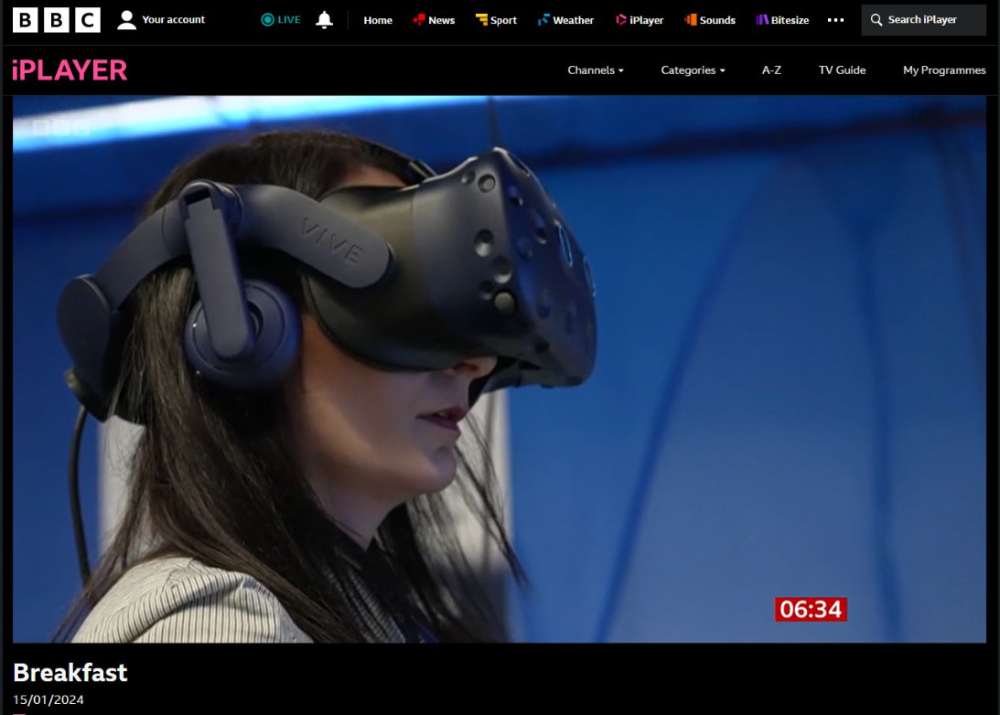

Hi, I’m Lilia — I Build Immersive Digital Worlds from Real Data
Turning Complex Data into Beautiful, Usable Virtual Experiences
About
I’m Dr. Lilia Potseluyko, a researcher and developer based in Cambridge, UK. My work bridges the gap between immersive technologies and the construction industry. I bring a broad skill set across 3D computer graphics, reality and BIM data processing, game engines, Python-based web development, UX design and process automation. I specialise in building realistic virtual environments that showcase future designs or simulate real-world processes.
I work closely with clients to identify their needs and best practices for integrating interactive 3D visualisations. With expertise in automation and optimisation, I generate realistic worlds fast. I use Epic Games Unreal Engine, the most powerful and visually stunning real-time tool available, making real-time walkthroughs accessible without high development costs.
My work has been featured in the BBC, and I have collaborated with leading organisations such as National Highways, UK, Department of Transport, UK and the University of Cambridge. I have also worked with various companies to create virtual reality (VR) and augmented reality (AR) simulations for training, education, and public engagement.
In academia, I support researchers and students in using real-time simulation technologies to communicate ideas, demonstrate innovation, and raise awareness of their work.
I speak at conferences and lead workshops and training programmes on transforming reality data and BIM models into immersive VR environments for enterprise and educational use.
My hobby is to climb mountains, one step at a time — coming back exhausted and fulfilled.
Contact
Email Cambridge: lp625@cam.ac.uk
Email personal: lilia.potseluyko@gmail.com
Phone: +44 7400 140 440
External Links
LinkedIn: linkedin.com/in/liliaamobi
GitHub: github public pages
Cambridge Profile: drf.eng.cam.ac.uk/staff/dr-lilia-potseluyko
ORCID: orcid.org/0000-0003-4135-8108
Google Scholar: scholar.google.com/